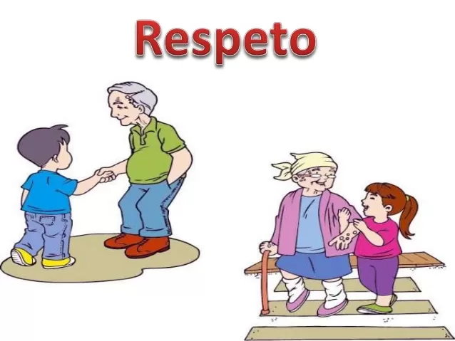
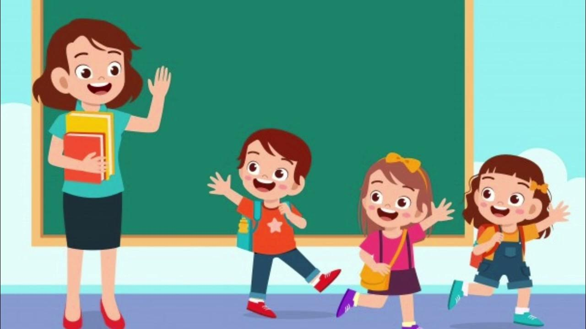
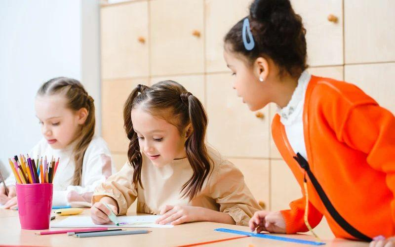

| El Respeto | |
| Según el libro “Cómo educar en valores” de Narcea Ediciones, el respeto es fundamental en la convivencia humana y se refiere a la capacidad de reconocer, aceptar y valorar las diferencias de los demás. Este valor implica actuar con consideración hacia las personas, su dignidad, derechos y opiniones. | |
| En el ámbito educativo, enseñar respeto significa promover un ambiente donde cada individuo se sienta valorado y comprendido, desarrollando la empatía y la escucha activa. El respeto no solo se aplica a las relaciones interpersonales, sino también al entorno, las normas, y las culturas diferentes, fomentando así una convivencia pacífica y armoniosa. | |
| Este valor se interrelaciona con otros como la tolerancia, la igualdad y la justicia, y su enseñanza requiere de estrategias que integren tanto la teoría como la práctica cotidiana, promoviendo un ambiente inclusivo y respetuoso en las aulas y en la sociedad en general. | |
| El respeto también incluye la capacidad de aceptar y aprender de las diferencias culturales, ideológicas, y religiosas. Este valor es esencial para construir una sociedad pluralista y diversa, donde cada persona puede expresarse libremente sin miedo a ser juzgada o discriminada. |  |
| Un ejemplo de respeto en el aula puede ser la creación de un espacio donde cada estudiante tiene la oportunidad de hablar y compartir sus ideas sin ser interrumpido. Esto fomenta la confianza y el respeto mutuo entre los alumnos, y permite que cada voz sea escuchada. |  |
| El respeto es clave para mantener relaciones interpersonales saludables. Se basa en la comprensión mutua, la comunicación abierta y el reconocimiento de la dignidad de cada persona. En una relación respetuosa, los individuos sienten que sus opiniones y sentimientos son valorados, lo que fortalece la confianza y el afecto mutuo. |
| Enseñar el respeto a los niños y adolescentes es esencial para su desarrollo personal y social. Se puede lograr modelando el comportamiento respetuoso, estableciendo normas claras y coherentes, y promoviendo el diálogo y la empatía. Además, es importante reconocer y reforzar las acciones respetuosas en el día a día. |  |